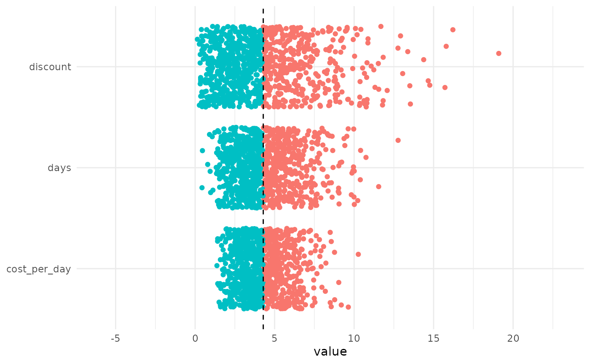
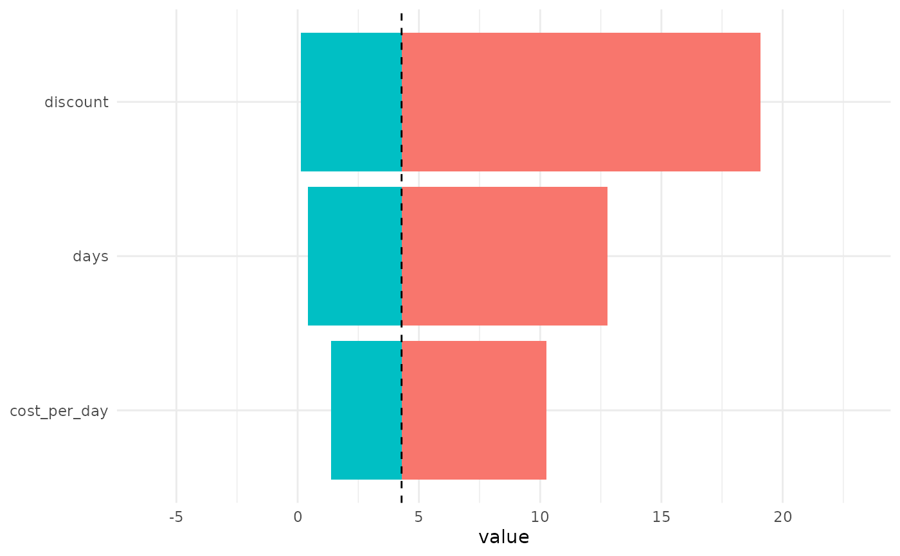

Tornado sampling and plotting function
tornado.RdA small wrapper around lapply that loops over a functions parameters,
sampling one whilst fixing the others. tornado_sample() just wraps a
simple univariate sensitivity analysis, ensuring the output is formatted in a
usable way for the namesake plot function.
Usage
tornado_sample(
n,
fun,
distributions,
...,
baseline = NULL,
output_name = ".result"
)
tornado_plot(x, ..., type = c("jitter", "maxmin"), nbreaks = 6, xlab = "value")Arguments
- n
Number of samples.
- fun
A vectorised function.
- distributions
Distributions created with the distributions3 package that correspond to the named parameters of
fun.- ...
Not currently used.
- baseline
NULL or a scalar numeric value. If not NULL then this value is used as the comparitor when producing the latter tornado plots.
- output_name
The name to use of the result column in the output tibbles. This must not correspond to any of the parameter names of
fun.- x
Output from
tornado_sample().- type
Character string. Either 'jitter' or 'maxmin'. If 'jitter' then we simply plot the sample results against the corresponding distribution that varies. Otherwise, we plot the corresponding maximum and minimum values as a split bar chart.
- nbreaks
Passed to
scales::breaks_extended().- xlab
The label for the x-axis.
Value
For tornado_sample() a tibble with class tornado_samples and an
additional attribute that gives the baseline value calculated when setting
each argument to it's distributions mean value (or an optional,
user-supplied, value). For tornado_plot(), a ggplot2 object
Examples
# User inputs ----------------------------------------------------------
# Function with desired arguments
# NOTE: MUST be vectorised by the user and return a scalar value
fun <- function(cost_per_day, days, discount) cost_per_day * days * discount
# A distribution (from distributions3) for each function argument
distributions <- list(
cost_per_day = distributions3::Gamma(shape = 9, rate = 0.5),
days = distributions3::Gamma(shape = 5, rate = 1),
discount = distributions3::Beta(alpha = 2, beta = 40)
)
# Number of samples to take for each argument
samples <- 1000
# Package functionality ------------------------------------------------
# generate the samples for each parameter
dat <- tornado_sample(samples, fun, distributions)
# jitter plot
tornado_plot(dat)

# plot of the extremes (akin to the more traditional plots)
tornado_plot(dat, type = "maxmin")
